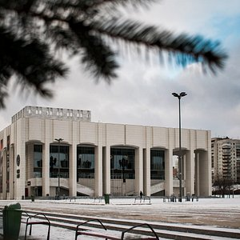

Пермь

Пермь — город на востоке европейской части России, в Предуралье, на берегах реки Камы, ниже впадения в неё реки Чусовой, административный центр Пермского края и Пермского района, транспортный узел на Транссибирской магистрали, речной порт, имеет статус города краевого значения и городского округа.
Живописная уральская природа, места с богатой историей, самобытная прикамская кухня, театры с мировым именем и классные современные городские пространства. Пермь славится своей древней историей, известняковыми пещерами и бурными реками.
Достопримечательности в Перми
Пермский академический Театр-Театр – один из старейших театров Пермского края, основанный 14 марта 1927 года. Со дня основания театр прошел почти вековой путь развития от молодежного полупрофессионального коллектива без постоянной сценической площадки до известного в стране мультижанрового репертуарного театра.
Архиерейское Подворье Храма Вознесения. Стройный, бесстолпный храм «корабельного» типа. Храмовая часть перекрыта полукруглым сводом, над алтарем возведен четырехгранный куб, увенчанный традиционным русским пятиглавием. Пермяки сразу полюбили светлый, просторный храм, который стал одним из наиболее посещаемых храмов епархии.
.jpg)
В последние годы Пермь активно развивается, здесь есть много «зеленых» зон и парков, которые обновили и реконструировали, сделав их удобными и современными городскими пространствами. Живописная уральская природа, места с богатой историей, самобытная прикамская кухня, театры с мировым именем и классные современные городские пространства.